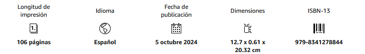

Libro de relatos · ficción especulativa
Cuentos de la abuela robot
Un libro de relatos breves organizado en cuatro territorios —Realidad, Familia, Tecnología y Mito—, donde cada historia parte de una regla alterada y observa qué cambia a partir de ella.
Las premisas van de la identidad digital y la tecnología cotidiana a los vínculos familiares, el mito y la percepción de lo real. El interés no está en describir futuros completos, sino en introducir una anomalía precisa dentro de una vida reconocible.
Ese desplazamiento sirve para llevar una situación corriente hasta una contradicción moral, afectiva o social. La brevedad y la ironía mantienen el mecanismo visible sin convertir el relato en una explicación de su propia idea.
Datos de edición

Fragmento
«Pedro era un enorme mastín, viejísimo. Apenas podía caminar. Pero, aun así, se levantaba para recibir al invitado. Era un perro guardián: defendía la casa con su afecto. En cuanto el extraño se acercaba, Pedro caminaba un poco patizambo y con enorme dificultad hasta él y le lamía los zapatos, el pantalón, las manos. Se rozaba con él y expresaba una alegría tan pura que el visitante quedaba rendido y ya daba por buena la visita.»